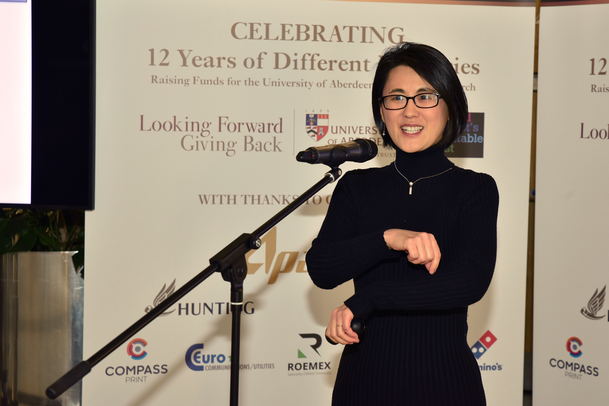

Research
Eunchai studies the cellular and molecular mechanisms that shape the human brain, with a particular interest in cortical neurogenesis and how neural tissue responds to environmental and inflammatory signals. Her work combines human stem cell-derived organoids and assembloids with ex vivo human fetal brain models to investigate how neural stem cells build organised tissue and how interactions among neural and non-neural cell types influence developmental outcomes.
Neuroimmune interactions across development and degeneration
Eunchai also leads research on how immune and ageing-associated changes alter human neural tissue. This work spans maternal inflammation and IL-17A signalling during development, APOE-dependent microglial function in Alzheimer's disease, cellular senescence, and changes at brain interfaces such as the choroid plexus. A central aim is to understand how interactions among neural, immune and barrier cell populations shape vulnerability across different stages of life.
Research interests
- Human cortical development and neurogenesis
- Brain organoids, cerebroids and assembloids
- Maternal inflammation and IL-17A signalling
- Neuroimmune interactions across development and degeneration
- APOE, microglia and Alzheimer's disease
- Cellular senescence and choroid plexus biology
Background
Training
Eunchai completed her undergraduate studies at KAIST in South Korea, followed by a PhD at Johns Hopkins University and postdoctoral training at the University of Pennsylvania.
Outside research
Eunchai enjoys playing the piano and cello.

Selected publications
Research highlights
Assir et al. Modeling maternal immune activation in 3D ex vivo human fetal brain cerebroids reveals IL-17A-driven disruption of cortical development. Nature Neuroscience, 2026. View publication
Gim et al. Deciphering Cell-Type and Temporal-Specific Matrisome Expression Signatures in Human Cortical Development and Neurodevelopmental Disorders via scRNA-Seq Meta-Analysis. Nature Communications, 2025. View publication
Qian et al. Brain-region-specific organoids using mini-bioreactors for modeling ZIKV exposure. Cell, 2016. View publication